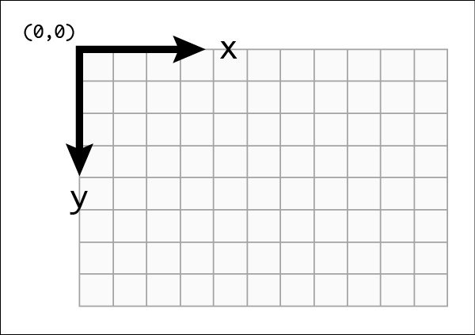

SVG
Today's topics:
SVG Intro
Modes
Coordinates
Basic shapes
Accessibility
Animations
What is SVG?
Some facts about SVG:
- W3C recommendation
- Integrates with the CSS, DOM, JS and SMIL
- Scalable
- Don't lose any quality if they are zoomed or resized
- Can be printed with high quality at any resolution
- Every element and every attribute in SVG files can be animated
Disadvantages:
- No 3D graphics
- Large file size
- Difficult to use in large mapping applications
- More details - more size of svg data
SVG Modes
Coordinates
Coordinate system:
SVG attributes:
- viewport
- viewBox
- preserveAspectRatio
viewport
viewBox syntax:
viewBox = <min-x> <min-y> <width> <height>
preserveAspectRatio syntax:
preserveAspectRatio = defer? <align> <meetOrSlice>?
Basic shapes
Rectangle
Circle
Ellipse
Line
Polygon
Polyline
Path
- M = moveto
- L = lineto
- H = horizontal lineto
- V = vertical lineto
- C = curveto
- S = smooth curveto
- Q = quadratic Bézier curve
- T = smooth quadratic Bézier curveto
- A = elliptical Arc
- Z = closepath
Path example:
Accessibility
SVG as img src

SVG as img src
Inline SVG
Embed SVG via object or iframe
A cute, gray cat with green eyes. Cat illustration by Heather Migliorisi.
Icons
Standalone Meaningful Icon
Standalone Decorative Icon
Linked Icon, no text
Linked Icon, with static text
CodePen
Linked Icon, with dynamic text
0
items in your shopping cart
Animations
Animating with CSS @keyframes
.left-leg {
fill: orange;
animation: dance 2s infinite alternate;
}
@keyframes dance {
100% {
transform: rotate(3deg);
}
}
Animating with SMIL
Animating with JavaScript
- Snap.svg
- SVG.js
- D3.js
- GreenSock
- and others ...